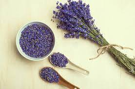
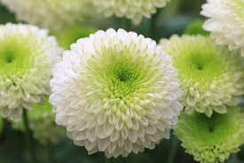

ROSA MOSQUETA
Contienes ácido retinoico o vitamina A y C. Sus principales efectos detonan en la renovación de la piel y el cabello, haciéndolos más saludables y resistentes. En definitiva, ayuda a que la piel no se reseque, evita las arrugas y fortalece la textura capilar.
MANZANILLA
La manzanilla contiene bisabolol, un extracto que tiene beneficiosas propiedades anti-inflamatorias. Generalmente, también se usa para el cuidado de la piel. Es ideal para calmar y reducir la irritación, la picazón y la sequedad, que son síntomas comunes en los problemas de la piel. Controla el sarpullido-.
CALÉNDULA
Es una flor que contiene taninos astringentes, lo que ayuda a combatir infecciones. También es usada para calmar eczemas e irritaciones. De este modo, reduce la inflamación y desinfecta levemente la piel.
LAVANDA
Tiene propiedades calmantes, antiinflamatorias y antisépticas. Los productos de esta planta sirven para calmar erupciones, irritaciones, eccemas, quemaduras solares, etc.
ÁRNICA
Su principal componente es la helenalina, la cual funciona como una planta antiinflamatoria. Es de uso frecuente en caso de sufrir una caída o golpe, puesto que provoca un incremento en el flujo sanguíneo en el área en que se aplica. Evita la aparición de moretones.
CRISANTEMOS
Las grandes y llamativas flores del crisantemo son muy hermosas y coloridas. Además, pueden usarse para hacer una bebida que alivie fiebres y síntomas de la gripe, como el catarro. Además, es conocida por calmar los dolores de cabeza, bajar la inflamación ocular y paliar la hipertensión en ocasiones.
Las Flores Peligrosas